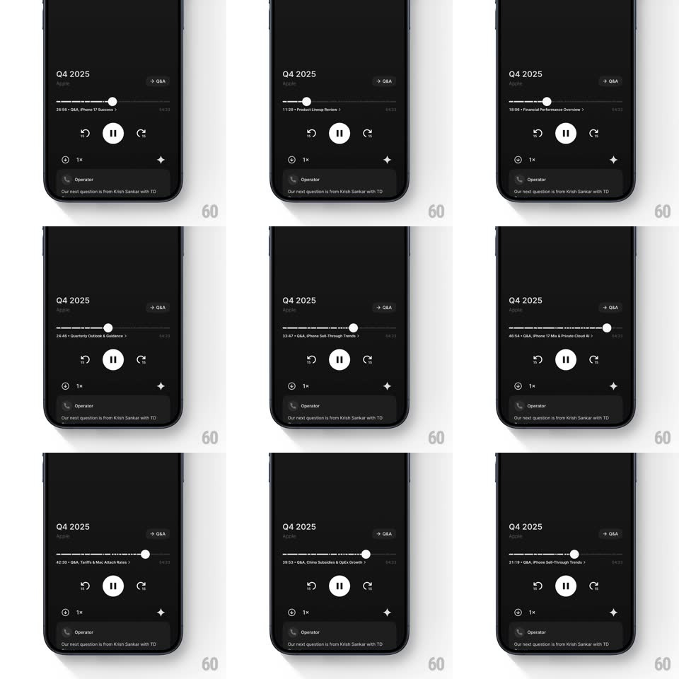

Media
Frame-by-frame

Rebuild this interaction 1:1: Quartr's chapter scrubber - drag across the call timeline and the chapter title under the scrubber crossfades and slides to whatever chapter your finger is in.

Rebuild this interaction 1:1: Quartr's chapter scrubber - drag across the call timeline and the chapter title under the scrubber crossfades and slides to whatever chapter your finger is in.
## Integration
Integration: stack-agnostic spec - springs given as stiffness/damping, timed motions as duration + curve; map every value to your framework and animation library of choice.
## Scene
A dark audio player for an earnings call ("Q4 2025", company name, a "Q&A" jump link): a timeline track carrying chapter tick marks and a round scrub handle, the current chapter label beneath it ("44:28 - Q&A, iPhone Constraints & AI Impact >"), transport controls (replay/forward 15s, pause), speed and download rows, and the live transcript card ("Operator: Our next question is from Krish Sankar with TD...").
## Motion spec
Pattern: scrub-linked chapter title crossfade with slide.
- While dragging the handle, the chapter label updates live: when the handle crosses a chapter boundary, the old label slides down 10px and fades (150ms) while the new one slides up from 10px (200ms, ease-out) - a vertical swap, not a horizontal one.
- The label always carries the chapter's start timestamp ("25:13 - Quarterly Outlook & Guidance") with its chevron, and it tracks the handle's time, not the playhead - scrubbing ahead shows future chapters.
- Chapter ticks on the track highlight up to the handle position (white vs dim) 1:1 with the drag.
- On release, playback seeks to the handle position: the handle springs a hair (scale 1 -> 1.15 -> 1, 180ms), the label holds, and the transcript card crossfades to the new position's text (250ms).
- During passive playback the label swaps with the same motion as chapters roll by - scrub and playback share one mechanism.
## Calibration
- The label swap is fast enough to feel synchronous with the finger (total under 250ms) - lag here reads as broken.
- The handle stays a clean white dot - no time bubble; the chapter label does that job.
## Reduced motion
Label crossfades without the slide; transcript swaps without motion.
## Don't miss
- The chapter label is tappable (its chevron jumps to the chapter list) - it is navigation, not decoration.
- The transcript card keeps playing catch-up below - scrubbing the timeline re-anchors it too.